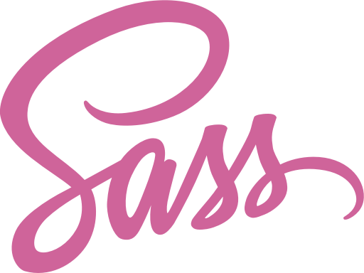

CSS с суперсилой
Sass является наиболее развитым и стабильным расширением CSS профессионального уровня.
Официальный сайт Selectel. Серверы. Облако. Дата-центры.
Выделенные серверы с GPUКонфигураторРаспродажа серверов152-ФЗ
SLA 100%Пакеты трафикаАвтоустановка ОСБесплатный IPv4-адрес
Sass полностью совместим со всеми версиями CSS. Мы уделяем серьезное внимание совместимости, поэтому вы можете легко использовать любые доступные библиотеки CSS.
Sass может похвастаться большим количеством возможностей, чем любой другой язык расширения CSS. Команда Sass Core бесконечно работает не только для поддержания этих возможностей, но и для того, чтобы быть впереди.
Sass находится в активной разработке командой Sass Core более 12 лет и все это время команда относится к этому процессу с любовью.
Снова и снова сообщество разработчиков выбирает Sass как главное средство написания CSS.
Sass активно поддерживается и разрабатывается консорциумом высокотехнологичных компаний и нескольких сотен разработчиков.
Есть бесконечное количество фреймворков, построенных на Sass. Compass, Bourbon, и Susy - это только несколько примеров из огромного количества проектов.
Sass © 2006–2018 Hampton Catlin, Natalie Weizenbaum, Chris Eppstein, Jina Anne, и многочисленные участники. Доступно для использования и изменения по лицензии MIT.